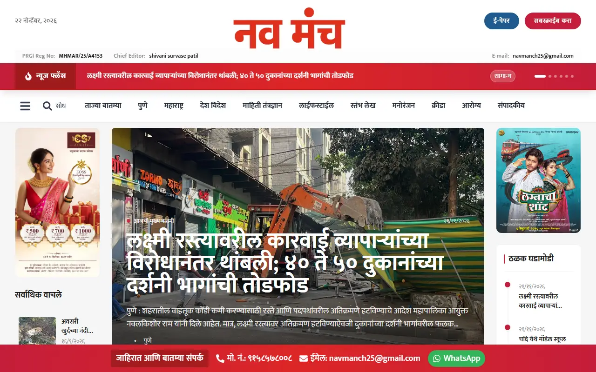

The Uniform Lab
System-driven institutional manufacturer and supplier of school, college, corporate, and industrial uniforms operating across Wanowrie and Hadapsar in Pune.
Scope: Web design, catalog structure
Visit theuniformlab.in ↗Work Archive · 07 Live Builds
Every project below is live in production and carries our studio credit. Inspect the build scope in the sticky viewer or open any live website directly.
System-driven institutional manufacturer and supplier of school, college, corporate, and industrial uniforms across Wanowrie and Hadapsar, Pune.
System-driven institutional manufacturer and supplier of school, college, corporate, and industrial uniforms operating across Wanowrie and Hadapsar in Pune.
Scope: Web design, catalog structure
Visit theuniformlab.in ↗
End-to-end institutional and industrial uniform manufacturing spanning school, corporate, hospital, hotel, security, and sportswear apparel with a production plant in MIDC Baramati.
Scope: Web design, manufacturing showcase
Visit primoglobal.in ↗
Established in 1998 in Kothrud, Pune, supplying ISI-certified plywood, blockboards, laminates, veneers, timber, and architectural hardware to architects and contractors.
Scope: Web design, material catalog
Visit yashply.in ↗
Direct-to-consumer retail brand in Kothrud, Pune offering insulated stainless-steel drinkware, tumblers, and everyday-carry essentials.
Scope: E-commerce storefront, product pages
Visit thetrexstore.com ↗
Online academic and exam-preparation platform supporting orthodontists and MDS Orthodontics and Dentofacial Orthopaedics postgraduates with modules, question banks, and mind maps.
Scope: Platform design, study archive
Visit orthochronicles.com ↗Cross-border U.S.-India tax and financial advisory CPA firm covering corporate and personal filings, FATCA, FinCEN 114, EB-5, and estate planning across five offices.
Scope: Corporate web architecture, multi-office structure
Visit kkassociate.com ↗
Regional Marathi digital news publication and newspaper portal headquartered in Mohammadwadi, Pune.
Scope: Publication design, news portal structure
Visit navmanchnews.com ↗